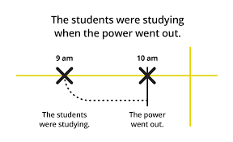

Meaning of Past Simple according to the Cambridge Dictionary
the form of a verb used to describe an action that happened before the present time and is no longer
happening.
Meaning of Past Continuous according to the Cambridge Dictionary
the grammatical form used for an action that someone was doing or an event that was happening at a
particular time.

As you can see from this simple diagram, the past simple is used to express an activity in a point of time.
In this case, the students were already studying before the power went out.
Then, at 10pm, the power went out while they were still studying.
In conclusion, past simple is used to express an activity or event that has happened while something else
is happening

Based on this picture, we find that:
1. We use was / were while writing a past continuous sentence.
2. We add ing for the verb when writing a past continunous sentence
Therefore, the past continunous is used:
while an event of activity that is happening in a period of time.
Example: I was coding all afternoon
This sentence indicates that:
Coding is the activity that is happening all afternoon, which is our period of time.